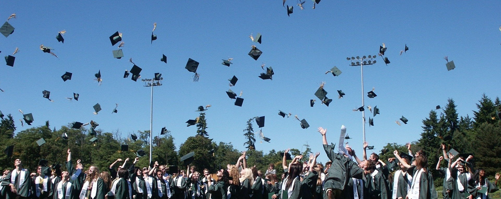
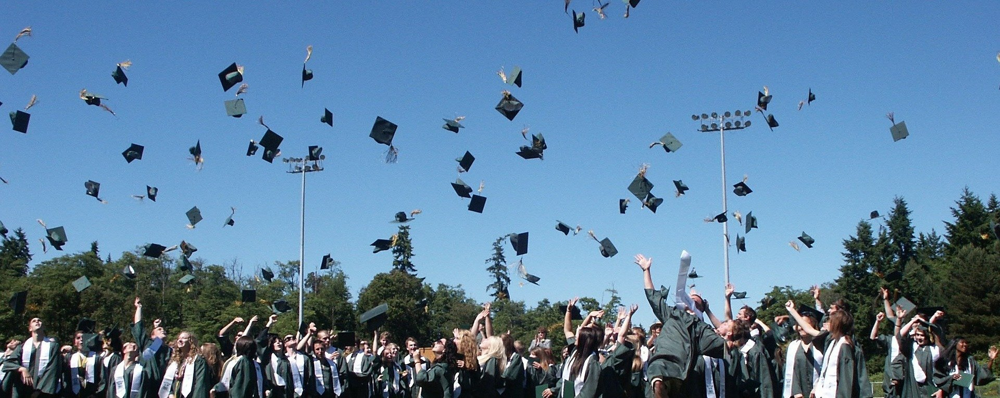

Existe un compromiso por proporcionar una educación de calidad, inclusiva e igualitaria en todos los
niveles: enseñanza preescolar, primaria, secundaria y terciaria y formación técnica y profesional.
Todas
las personas, sea cual sea su sexo, raza u origen étnico, incluidas las personas con discapacidad,
los
migrantes, los pueblos indígenas, los niños y los jóvenes, especialmente si se encuentran en
situaciones
de vulnerabilidad, deben tener acceso a posibilidades de aprendizaje permanente que las ayuden a
adquirir los conocimientos y aptitudes necesarios para aprovechar las oportunidades que se les
presenten
y participar plenamente en la sociedad. Se prevé hacer un esfuerzo por brindar a los niños y los
jóvenes
un entorno apropiado para la plena realización de sus derechos y capacidades, ayudando a nuestros
países
a sacar partido al dividendo demográfico, incluso mediante la seguridad en las escuelas y la
cohesión de
las comunidades y las familias.
Es de gran importancia aumentar los esfuerzos encaminados a reforzar la función que desempeña la
educación en la plena realización de los derechos humanos, la paz, el ejercicio responsable de la
ciudadanía local y global, la igualdad de género, el desarrollo sostenible y la salud. Los
contenidos de
dicha educación han de ser adecuados y contemplar aspectos tanto cognitivos como no cognitivos del
aprendizaje. Los conocimientos, capacidades, valores y actitudes que necesitan todas las personas
para
vivir una vida fructífera, adoptar decisiones fundamentadas y asumir un papel activo, tanto en el
ámbito
local como a nivel global a la hora de afrontar y resolver los problemas planetarios, pueden
adquirirse
mediante la educación para el desarrollo sostenible y la educación para la ciudadanía global -que a
su
vez incluye la educación para la paz y los derechos humanos-, la educación intercultural y la
educación
para la comprensión internacional, por lo tanto se debe plantear un modelo educativo que responda a
los compromisos adquiridos en el marco de los ODS.
Descripción del objetivo


En particular, las niñas y niños con discapacidad requieren y necesitan un apoyo técnico, material y humano garantizado que sea efectivo, porque se detecta que la falta de apoyo redunda negativamente en su actividad diaria en el aula y en las actividades extraescolares y en la convivencia, más allá del estudio, así como en las situaciones de acoso escolar que, sin duda, hay que erradicar.
SOBRE LA BRECHA DE GÉNERO
Por lo que respecta al sistema universitario español se sigue observando la brecha de género en las carreras técnicas o científicas. Más de la mitad del alumnado universitario en España, un 55 %, es femenino, y sin embargo la brecha de género es abismal en algunos estudios superiores. La presencia de la mujer continúa siendo minoritaria en las llamadas disciplinas STEM (Ciencia, Tecnología, Ingeniería y Matemáticas, por sus siglas en inglés): si en el curso 2018-2019, por ejemplo, un 51 % de las matrículas de Ciencias corresponden a mujeres, tres de cada cuatro alumnos matriculados en la rama de Ingeniería y Arquitectura son hombres, y en Informática las mujeres se quedan en un 12,9 %. Estas, por el contrario, representan una abrumadora mayoría en las ramas de Ciencias de la Salud (70,3 %), Artes y Humanidades (63,6 %) y Ciencias Jurídicas y Sociales (59,8 %), según datos del Ministerio de Universidades. Por desgracia, estos datos fuera de España no varían demasiado.
La brecha de género es producto de una extensa historia de prejuicios y estereotipos sociales, dado
que toda la vida a las mujeres se les ha dicho que son “más intuitivas o sensibles” (asociándolas a
carreras de comunicación, enfermería, etc) y a los hombres que son de “mente fría y analítica” (ligándolos a
carreras de ciencias, tecnológicas, etc). La lucha contra la brecha de género es fundamental, ya que
“los equipos que tengan perfiles variados y multidisciplinares incitan a la productividad y
eficiencia”
según Ana Delgado, Chief Education Officer en The Valley.
En IBM contemplan como solución fomentar
la
educación de las disciplinas STEM desde muy jóvenes, para terminar con los estereotipos que crean la
idea de que determinadas carreras son masculinas o femeninas. Para complementar esto, también es
importante dar una mayor visibilidad a los referentes femeninos, como por ejemplo el proyecto “Por
qué tan pocas” de la Universidad Complutense de Madrid. Se trata de un largometraje que visibiliza el
papel
de las mujeres españolas en los campos de la tecnología y ciencia. Por parte de IBM, se están
poniendo
en marcha diversas iniciativas, como “Open P-Tech”, para ofrecer a los jóvenes herramientas útiles
que
despierten su curiosidad y fomenten la vocación en disciplinas STEM.
 

En cuanto a la educación previa a estudios universitarios, las niñas todavía se siguen enfrentando a
obstáculos en la mayoría de las regiones, particularmente en Asia central, África septentrional,
Asia
occidental y el África subsahariana. Allí, niñas de todas las edades tienen más probabilidades de
quedar
excluidas de la educación que los niños.
En 2017, por cada 100 niños en edad de asistir a la escuela primaria que no asistían a ella, se negó
el
derecho a la educación a 127 niñas en el Asia central, 121 en el África subsahariana y 112 en el
África
septentrional y el Asia occidental. A nivel mundial, 118 niñas estaban sin escolarizar por cada 100
niños. Los recientes éxitos en la reducción del número de niños que no asisten a la escuela y la
disminución de la brecha de género en la tasa de desescolarización deberán repetirse en todo el
mundo
para asegurar que todos los niños, en todas partes, asistan a la escuela.